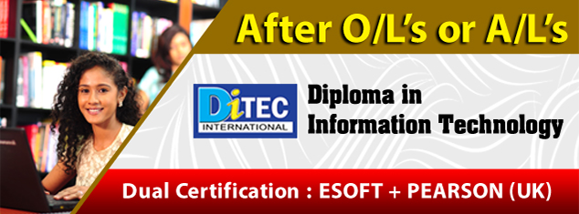
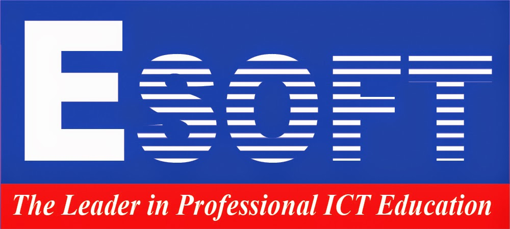

I'm currently doing two diplomas at Esoft. That are diploma in ICT and diploma in Web engineering .I have done O/L exam at ST Peter's collage .

ESOFT METRO CAMPUS
As the largest, private sector, higher education network in Sri Lanka with 45 centres island-wide, ESOFT creates opportunities for over 30,000 students every year.
Since our inception in 2000, we have built a solid reputation for delivering high quality and affordable academic programmes ranging from certificate to postgraduate level, across a variety of disciplines including Computing, Business, Hospitality, Engineering, Language Training and Personal and Professional Development.
ESOFT is also looking to expand internationally and recently established our first overseas branch in Bangladesh.
